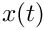
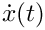

Tempus: Time Integration and Sensitivity Analysis Package
Introduction
Tempus is a Latin word meaning time as in “tempus fugit” -> “time flies”.
The Tempus package is a time-integration framework for advanced transient analysis, including various time integrators and embedded sensitivity analysis for next-generation code architectures. This framework provides “out-of-the-box” time-integration capabilities, which allows users to supply governing equations and easily switch between various time integrators. Additionally Tempus provides “build-your-own” capabilities, which allows applications to incorporate various Tempus components to augment or replace application transient capabilities. Other capabilities include embedded error analysis, sensitivity analysis, transient optimization with ROL.
Tempus provides a general infrastructure for the time evolution of solutions through a variety of general integration schemes, and can be used from small systems of equations (e.g., single ODEs for the time evolution of plasticity models, and multiple ODEs for coupled chemical reactions) to large-scale transient simulations requiring exascale computing (e.g., flow fields around reentry vehicles and magneto-hydrodynamics).
Capabilities
Tempus provides time-integration methods for first and second-order ODEs in their explicit and implicit forms,
Integrators
Tempus Integrators (e.g., Tempus::IntegratorBasic) are the time loop structure for time integration and provide several features, e.g.,
Control the advancement of the solution from timestep to the next, e.g., restart from failed timestep, selection of the next timestep size, solution output.
holds the solution history for the time integration
Timesteppers take a single timestep (PASS/FAIL) and operate on the supplied solution.
Steppers are stateless (i.e., do not hold on to data related to the solution), which indicates if the same solution is given to the Stepper multiple times, the same result would be obtained.
Steppers hold the governing equations/physics (e.g., ModelEvaulator).
Timesteppers can make the initial conditions "consistent" (i.e., ensure that and (and optionally satisfy the governing equation at the beginning of the time integration, e.g., .
Many Steppers take advantage of the First-Same-As-Last (FSAL) property, when possible, to reduce computational costs.
Applications can create their own steppers, derived from Stepper, that can be used with other Tempus capabilities, e.g., Integrator Basic and Solution History.
Steppers can mark solutions as failed (e.g., failure to reach solver tolerances), suggest timestep sizes, and calculate error estimates.
A variety of time steppers are available (also see Tempus::Stepper).
Solutions in Tempus are maintained in Tempus::SolutionState and incapsulate the complete state of the solution for a particular time. The primary requirement for SolutionState is that it contains all the information needed to restart the solution from scratch, e.g., check-pointing and recover from a failed timestep. The four primary components of the Tempus::SolutionState are
The state - ,  (optional), and (optional)
The metastate - timestep, time, order, error, etc.
maximum number of failures and consecutive failures
ensure constant time steps
incorporate Stepper suggested time step
Additionally, Tempus provides timestep control strategies (e.g., Tempus::TimeStepControlStrategy) for various variable-timestepping capabilities, and include
constant and variable timestep control
PID integral timestep controller
composite strategy, which can apply multiple control strategies
ability to incorporate application-specific control strategies
Tutorials
Here are some basic tutorials to illustrate how convert an application use Tempus, and some of the features available.